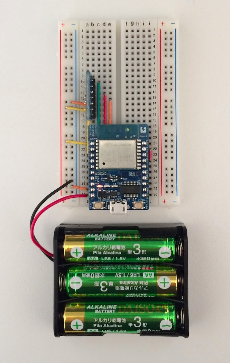

こんにちは。アンビエントデーターの下島です。
今月からシリーズでいろいろなセンサを使ったIoTのサンプルを紹介していきます。第一回は温度、湿度、気圧を測定し、クラウドに送信して記録し、確認する事例です。

温度、湿度、気圧センサをマイコンで制御し、測定したデータをクラウドに送って記録し、グラフ化してデータが確認できるようにします。
センサ端末の要件は用途によって様々です。今回は家や学校、オフィスなどで気象データを測定することを想定し、設置場所の制約の少ないワイアレスなセンサ端末にします。そのために、端末を電池で動作させ、測定データをWi-Fi経由でクラウドに送信するようにします。
また、気象データとしての温度や湿度はそれ程急激には変化しないので、データは5分毎に測定することにします。
クラウドサービスとしては、簡単にIoTデータの可視化ができる「Ambient」を使い、データを記録し、グラフ化します。
温度、湿度、気圧センサにはいろいろな製品があります。スイッチサイエンスのサイトで「温度センサ」で検索すると、温度だけを測定するもの、温度と湿度を測定するもの、温度、湿度、気圧を測定するものなど144製品がヒットします。今回は気象データの測定を想定し、温度、湿度、気圧が測定できる「BME280センサモジュール」を使います。
センサの制御にはWi-Fiモジュールが搭載されたマイコンボード「ESPr Developer」を使います。Wi-Fiは家やオフィスなどで幅広く使われており、特別なゲートウェイがなくても簡単にデータをクラウドに送信できるところがメリットです。
センサ端末に必要な部品をまとめました。
| 部品 | 個数 |
|---|---|
| BME280搭載 温湿度・気圧センサモジュール | 1個 |
| ESPr® Developer (ESP-WROOM-02開発ボード) | 1個 |
| 細いピンヘッダ 20P | 1個 |
| 普通のブレッドボード | 1個 |
| 固いジャンパワイヤ (ブレッドボード用) | 1個 |
温度・湿度・気圧センサのBME280はI2CとSPIという二つのインタフェースに対応しています。マイコンに接続するのがBME280だけであれば、I2C、SPIのどちらを選択しても構いません。今回はSPIインタフェースで接続することにします。
| ESPr Developer | BME280モジュール | |
|---|---|---|
| MISO | IO12 | SDO |
| CLK | IO14 | SCK |
| MOSI | IO13 | SDI |
| CS | IO15 | CSB |
| GND | GND | |
| +3.3V | Vcore | |
| +3.3V | Vio | |
回路図は次のようになります。

回路図を基にブレッドボード上に組み立てたセンサ端末の例です。BME280モジュールにはまっすぐなピンヘッダが付属していて、これで問題はありませんが、今回はモジュールをブレッドボードから離して設置したかったので、L字型のピンヘッダを使いました。

「ESPr Developer」はArduino開発環境でプログラミングします。開発環境のパソコンへのインストールは次のページなどが参考になります。
次にAmbientライブラリをご自分の開発環境にインポートします。 Githubの「Ambient_ESP8266_lib」 に行き、右上の「Clone or download」ボタンを押して出て来る「Download ZIP」をクリックして、 ライブラリを含むZIPファイルをパソコンにダウンロードします。
Ambient_ESP8266_lib-master.zipというファイルがダウンロードされるので、 適当なディレクトリに置きます(ダウンロードディレクトリーのままでもいいです)。
Arduino IDEを立ち上げて、メニューの「スケッチ」→「ライブラリをインクルード」→ 「.ZIP形式のライブラリをインストール…」を選択し、ダウンロードした ライブラリのZIPファイルを選びます。
もう一度「スケッチ」→「ライブラリをインクルード」を選択して 「Contributed libraries」に「Ambient ESP8266 lib」が表示されれば、 インストールは成功です。
まず、5秒毎に温度、湿度、気圧を測定し、シリアルモニタに出力するプログラムを動かし、 センサ端末の動作確認をします。 メインのプログラムは次のようになります。この他にBME280をアクセスするライブラリが必要です。
このメインプログラムとBME280ライブラリはAmbientライブラリのサンプルに入れてあります。 Arduino IDEの「ファイル」→「スケッチの例」→「Ambient ESP8266 lib」の「Ambient_ESP_BME280_test」を選択すると、プログラムが開発環境にロードできます。
プログラムをビルドして、動かし、次のように温度、湿度、気圧が表示されればOKです。
表示されない場合はESPr DeveloperとBME280の接続や、Arduio IDEの設定などを確認してください。
次に測定したデータを「Ambient」に送信します。
Ambientを使うには、まず最初にユーザー登録します。Ambientは基本部分は無料で使えます。Ambientのユーザー登録ページでメールアドレスとパスワードを入力すると、入力したメールアドレスに確認メールが送られますので、 メール中のURLをクリックするとユーザー登録は完了です。
ユーザー登録してログインすると、チャネル一覧ページが現れます。 Ambientではマイコンから送信するデータを「チャネル」という単位で管理します。 データを送る際は「チャネル」を指定して送ります。 最初はチャネルがないので、「チャネルを作る」ボタンがあるだけです。「チャネルを作る」ボタンを押すとチャネルが生成され、 作られたチャネルの情報が表示されます。
マイコンからデータを送信するときは、チャネルIDとライトキーを指定しますので、作られたチャネルのIDとライトキーを控えておきます。
データをAmbientに送信するには、まずチャネルIDとライトキーを指定してAmbientの初期化をおこないます。
次にセンサから読んだデータをパケットにセットします。データがint型、float型であれば直接ambient.set()でセットできます。データの桁数などを制御したければご自分で文字列形式に変換し、パケットにセットします。データをパケットにセットしたら、ambient.send()で送信します。 データは8種類まで送ることが出来ます。
プログラムは次のようになります。
このプログラムもAmbientライブラリのサンプルにあります。Arduino IDEの「ファイル」→「スケッチの例」→「Ambient ESP8266 lib」の「Ambient_ESP_BME280」がそれです。
プログラムをArduino IDEで開き、ssidとpasswordをお使いのWi-Fiルータに合わせて変更し、channelIdとwriteKeyにAmbientで先程作ったチャネルのIDとライトキーを設定します。動作確認のために測定間隔 PERIOD を15(秒)ぐらいに設定し、プログラムをビルドして、動かします。シリアルモニタに次のようなメッセージが出力されているはずです。
シリアルモニタでメッセージが確認できたら、ブラウザでAmbientのチャネル一覧ページのチャネル部分をクリックして、チャネルページを見てください。次のようにAmbientに送られた温度、湿度、気圧データがグラフで確認できます。
これで基本的なプログラムの動作は確認できました。測定間隔 PERIOD を300(5分)にしてビルドし直せば、5分毎に温度、湿度、気圧を測定し、 クラウドに送信して記録し、グラフで確認できます。
このプログラムはデータを測定、送信してから次の測定、送信まで5分間待つのにdelay()関数を使っています。プログラムとしては何もせず、ただ5分間待っているだけです。しかし、ESPr Developerで使われているマイコンESP8266は、Wi-Fi機能が常にデータ送受信可能な状態になっているなど、全機能が使える状態になっていて、スペック上は平均80mAの電流を消費しています。
ESP8266は全機能が使える通常モードの他にDeep Sleepモードと呼ばれる状態があります。Wi-Fi機能を含むほとんどの機能を停止させ、Deep Sleepモードから復帰するためのカウンタだけを動作させます。スペック上は10μAという超低消費電力モードです。
Deep Sleepモードから復帰するときにはマイコンにリセットがかかり、プログラムの先頭から再度実行されます。この時、ESP8266のIO16ピンからリセット信号が出力されます。IO16ピンとRESETピンをつないでおかないとリセットがかからないので注意が必要です。
Deep Sleepモードを使って先程のプログラムを作り直すと、次のような流れになります。
Deep Sleepを使ったバージョンもAmbientライブラリのサンプルにあります。Arduino IDEの「ファイル」→「スケッチの例」→「Ambient ESP8266 lib」の「Ambient_ESP_BME280_ds」がそれです。最後に「_ds」がついています。
これでdelay()で待つバージョンに比べ、消費電力は数%に抑えることができます。
最後にUSBケーブルを外し、電池(単3乾電池 x 3本)を接続すれば電池駆動のセンサ端末が出来上がります。

Ambientはユーザー登録してチャネルを作り、データを送れば、それだけでデータが記録され、グラフで確認できるようになります。初期設定をなるべく簡素にして、簡単に使い始められるようになっています。
それに加えてAmbientでは、後から分かりやすいようにチャネルに名前や説明文をつけたり、データに名前をつけたりできます。また、センサ端末の設置位置を設定したり、関連する写真を添付することもできます。
更にチャネルのデータを公開することもできます。
詳しくは以下のページをご覧ください。
今回開発したセンサ端末のデータを送っているチャネルも名前や説明文をつけて、以下のページで公開しました。チャネルページのカスタマイズの様子などが確認できます。
https://ambidata.io/ch/channel.html?id=3088
温度、湿度、気圧は気象センサとして基本的なデータです。その他にもオフィスや住環境の測定、水田やビニールハウスの温度、湿度管理、工場の設備、機械の温度管理など様々な分野での応用が可能です。
IoTでは、実際のデータで現状把握することが重要です。データによる現状把握に、この記事がお役に立てたら嬉しい限りです。